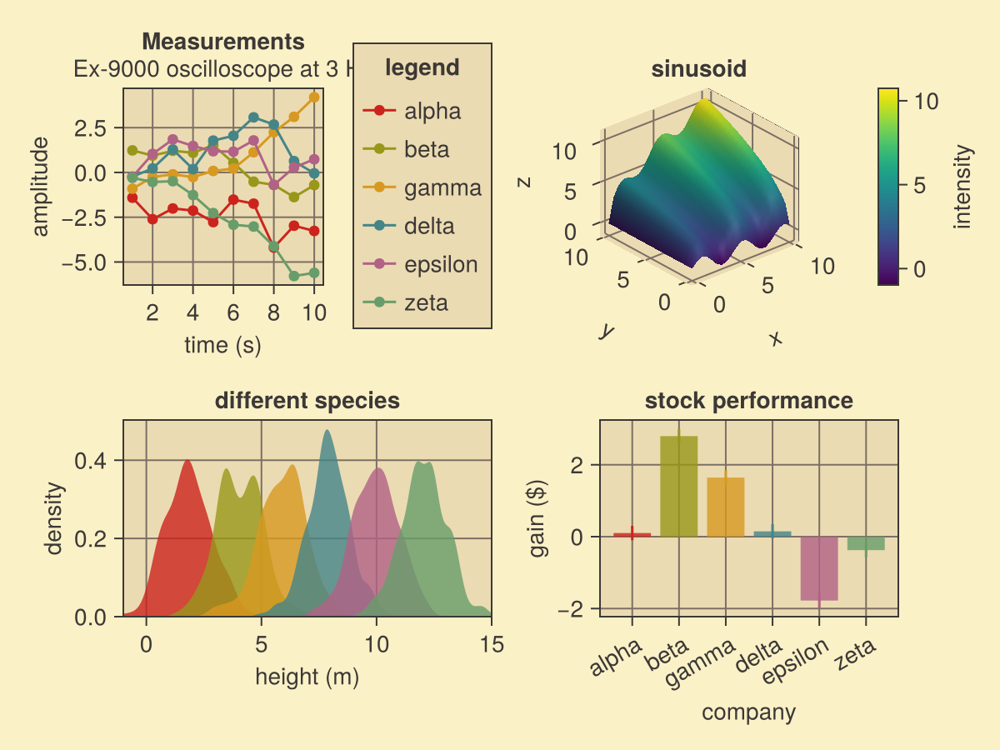
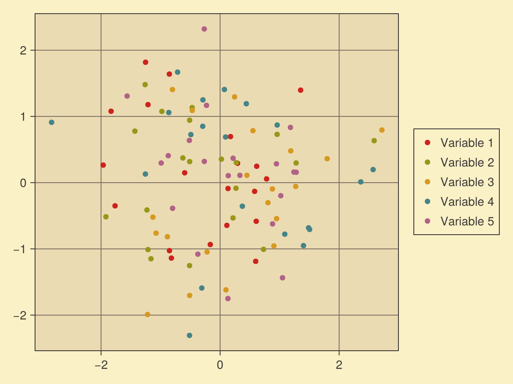
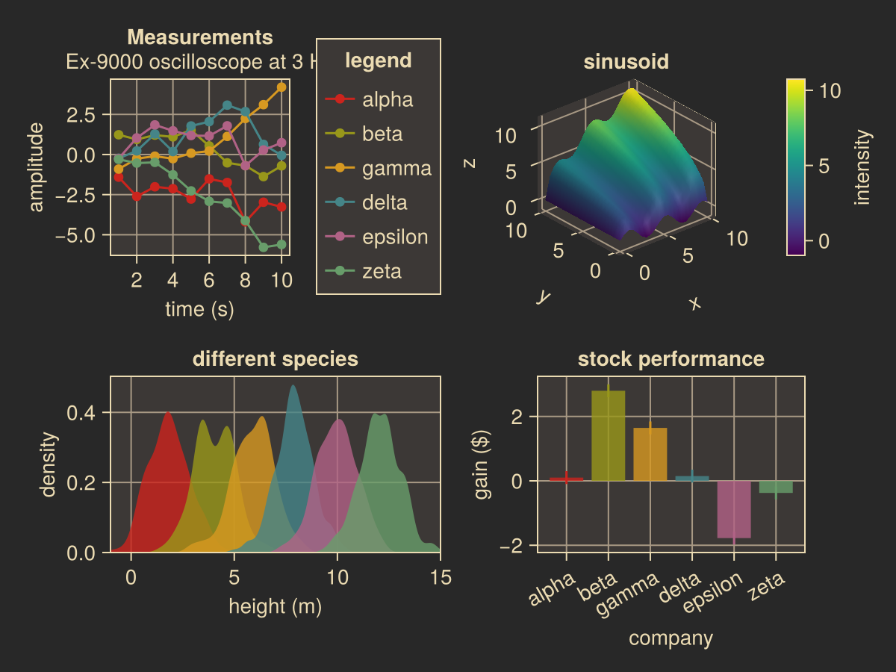
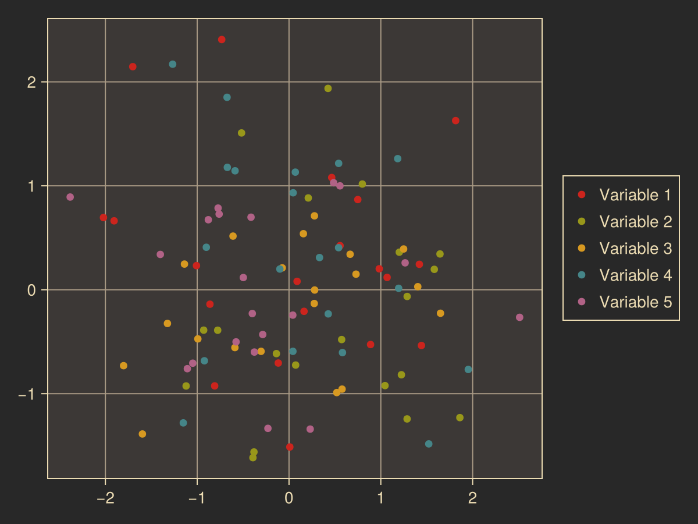

Gruvbox
The Gruvbox theme[1] is a color-only theme. Preferred entry points are color_gruvbox(mode::Symbol = :light) and the alias theme_gruvbox. Wrappers color_gruvbox_light() and color_gruvbox_dark() remain available.
using Makie, MakieThemes
set_theme!(color_gruvbox(:light))
set_theme!(color_gruvbox(:dark))
set_theme!(theme_gruvbox(:dark)) # alias for color_gruvboxLight
MakieThemes.demofigure(color_gruvbox(:light))
MakieThemes.demoscatter(color_gruvbox(:light))
Dark
MakieThemes.demofigure(color_gruvbox(:dark))
MakieThemes.demoscatter(color_gruvbox(:dark))
Missing docstring for color_gruvbox_light. Check Documenter's build log for details.
Missing docstring for color_gruvbox_dark. Check Documenter's build log for details.